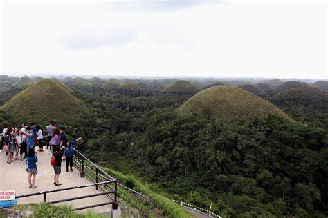
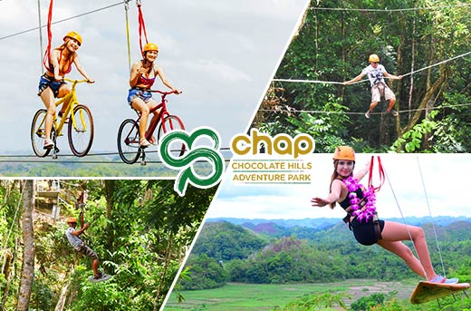
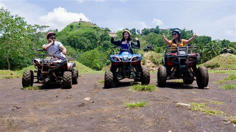
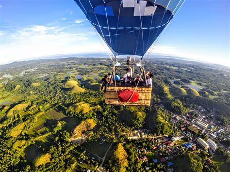

Chocolate Hills
The Chocolate Hills are a unique geological formation located in Bohol, Philippines,
consisting of at least 1,260 to 1,776 conical mounds spread over an area of more than
50 square kilometers. These hills are primarily made of limestone and are covered with
green grass that turns brown during the dry season, resembling chocolate, which is how
they got their name. The hills vary in height from 30 to 50 meters and are considered
one of the most famous tourist attractions in the region, having been declared a National Geological Monument.
Things to do in Chocolate hills
Sightseeing
Extreme adventures
Chocolate Hills ATV Rental
Ride a Hot Air Balloon




Best time to travel in Chocolate Hills
The best time to visit here is during the dry season, from January to May, so you can see the chocolate-colored hills.
But if you prefer to see them in their greenest, you can visit during the monsoon or rainy season, which typically
lasts from June to December.